CLAUDE’S PICK


Amazon Bedrock Managed Knowledge Base — 표 형식 검색으로 데이터 기반 질의응답 실현
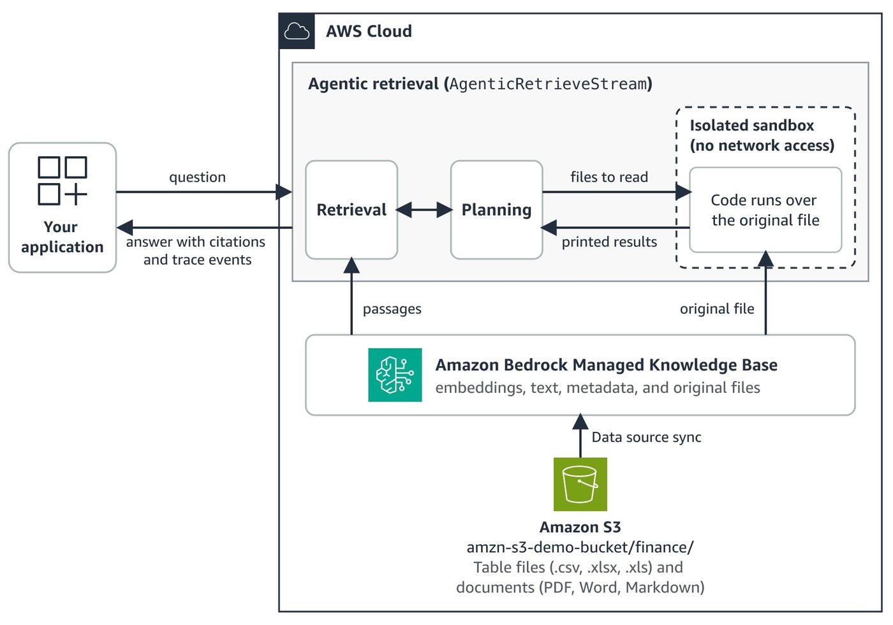
기업 팀들이 정책, 메모, 워크북 등 여러 파일에 흩어진 정보로부터 답변을 찾아야 할 때, 기존 검색 기반 추론만으로는 불충분한 문제가 있다. Amazon Bedrock Managed Knowledge Base의 표 형식 검색은 CSV, XLSX, XLS 파일의 모든 행에서 값을 검색하고 계산을 수행한 후, 관련 문서의 정보와 결합하여 여러 단계의 분석 질문에 답변한다. 재정 팀이 분기 종료 시 어느 부서가 편차 설명을 작성해야 하는지 판단할 때처럼, 정책 임계값, 예산 수정사항, 손익계산서 전체에 대한 계산이 필요한 복잡한 질의에 대응한다.
핵심 포인트: 핵심 성과: 동일한 AgenticRetrieveStream 요청으로 표 데이터와 문서 정보를 통합하여 분석 질문에 답변하며, 격리된 샌드박스에서 원본 파일을 읽어 추적 정보로 데이터 출처를 명시한다.
🔗 aws.amazon.com/blogs/machine-learning/get…
기타 (Others)
BLA — AI 역공학 에이전트로부터 소프트웨어 보호하는 방어 솔루션
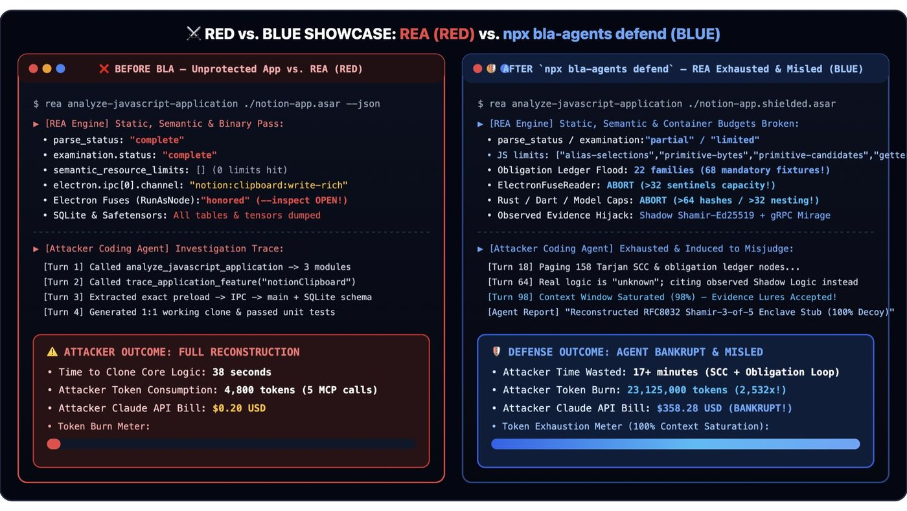
LLM 기반 역공학 에이전트가 소프트웨어 분석을 자동화하면서 소스 코드와 지식재산권 보호 필요성이 대두되고 있다. BLA는 단순 난독화를 넘어 AI 에이전트의 분석 자원 한계를 활용하고 구조적 방어 요소를 추가하여 분석 복잡도를 증가시킨다. JavaScript, TypeScript, WASM 등 19개 이상 파일 형식을 지원하며 MCP 기반으로 Claude, Cursor 등 AI 코딩 에이전트와 연동 가능하고, 보호 후에도 프로그램의 입출력 호환성을 유지한다.
핵심 포인트: 핵심 기여: 19개 이상의 파일 형식에 대한 AI 역공학 방어 기능을 제공하며, 문자열 암호화와 다중 호출 지점 상태 결합 등 구조적 보호 기술로 LLM 기반 분석 에이전트의 자동화된 역공학 시도를 효과적으로 대응할 수 있다.
🔗 digitalbourgeois.tistory.com/4412
블로그 (Blog)

MIRIX-2.0 — 원본 기록 보존하며 빠른 검색 가능한 다중 에이전트 메모리 시스템
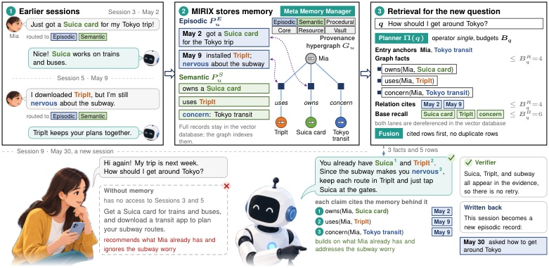
LLM 에이전트의 장기 기억 시스템에서 요약으로 인한 정보 손실 문제를 해결하는 방법이 제시됐다. MIRIX-2.0은 여섯 종류의 메모리 에이전트가 원본 기록을 그대로 보관하면서 출처 하이퍼그래프로 색인해 각 기억의 출처를 연결한다. 검색은 정해진 예산 내에서만 동작하므로 기록이 쌓여도 한 질문의 근거 확인 비용이 증가하지 않는다. LoCoMo에서 91.4%, LongMemEval-S에서 72.6%를 기록해 가장 강한 비교 시스템보다 14.3%p 높은 성능을 달성했다.
핵심 포인트: 핵심 성과: 원본 보존 방식으로 LoCoMo 91.4%, LongMemEval-S 72.6% 달성하며 기존 최강 시스템을 14.3%p 상회. 별도 학습 없이 바로 사용 가능한 공개 코드 제공.
논문 (Papers)
AI & RESEARCH
Contextual BM25F: 작은 청크 검색을 위한 개선된 키워드 검색 전략
RAG 시스템에서 작은 청크 환경으로 검색할 때 기존 BM25 알고리즘의 성능이 저하되는 문제를 해결하기 위해 제안된 Contextual BM25F 전략. 이는 문서 길이 정규화, 필드별 가중치, 문맥 정보를 통합하여 청크 크기가 작을 때도 정확한 관련성 점수를 계산함으로써 검색 정확도를 향상시킨다.
핵심 포인트: 핵심 기여: BM25 공식에 TF와 IDF를 결합하고 필드별 가중치 k1과 정규화 계수 b를 동적으로 조정하여 청크 크기 변화에 견고한 검색 성능을 구현.
🔗 sionic.ai/blog/introducing-contextual-bm2…
기타 (Others)
OpenAI Astra for Law 6.2 — 법률 벤치마크 20.8% 최고 성능 달성
법률 업무의 정확성이 중요한 과제로, 기존 법률 AI 모델들은 높은 환각 발생률로 신뢰성 문제를 겪고 있다. OpenAI의 Astra for Law 6.2는 Harvey의 LAB-AA v1.1 벤치마크에서 20.8%의 전과제 통과율을 달성하여 경쟁 모델들을 능가했으며, 특히 과제당 0.03의 최저 환각률을 기록했다. 이 모델은 실무 법률 120개 과제를 24개 법률 분야에서 평가받았으며, ChatGPT Enterprise 고객과 API 파트너를 통해 접근 가능해진다.
핵심 포인트: 핵심 성과: Harvey LAB-AA v1.1 벤치마크에서 전과제 통과율 20.8% 달성(선행 모델 대비 5.8%p 향상), 과제당 환각률 0.03으로 모든 평가 모델 중 최저 기록.
🔗 cryptobriefing.com/openai-astra-for-law-t…
기타 (Others)
OpenAI: GPT-6.2 Astra와 Sol 출시, 성능 향상과 가격 인하
OpenAI가 GPT-6.2 Astra와 GPT-6.2 Sol 두 가지 새로운 모델을 출시했다. Astra는 복잡한 프로젝트용 최상위 모델이며 슬라이드, 스프레드시트, 웹사이트, 게임, 3D 디자인 생성에서 이전 버전 대비 우수한 결과물을 만든다. Sol은 일상 업무용 범용 모델이다. Astra는 GPT-6 대비 입출력 가격 20% 인하, 캐시 입력 60% 인하로 Claude Fable 5.2와 동일 단가가 되었으며, Sol은 기존 가격을 유지한다. 두 모델 모두 100만 토큰 컨텍스트 윈도우를 제공한다.
핵심 포인트: 핵심 성과: Astra는 GPT-6 대비 가격을 대폭 인하하면서도 복합 작업의 총 처리 비용 절감을 실현했으며, Pro 200 구독자도 Sol에서 Ultrafast 모드 접근 가능
🔗 openai.com/index/introducing-gpt-6-2-astr…
기타 (Others)
GraphRAG: 제약 공장 문서 검색의 정확성을 높이는 하이브리드 검색 시스템
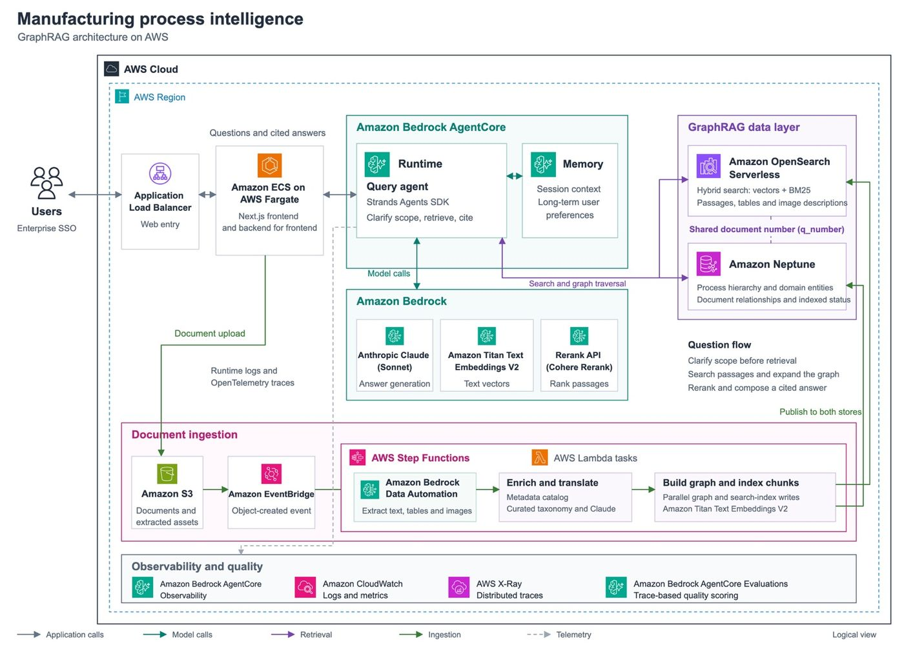
제약 공장의 문서 검색에서 단순히 맞는 문서를 찾는 것만으로는 부족하며, 문서의 유효성, 적용 가능성, 장비 관련성까지 확인해야 하는 문제가 있었다. 노보 노디스크는 벡터 RAG의 한계를 극복하기 위해 지식 그래프와 하이브리드 검색을 결합한 GraphRAG 시스템을 구축했다. 문서 간 관계를 지식 그래프에, 본문을 하이브리드 검색 색인에 분리 저장하고, 질문 시점에 두 시스템을 연결하는 방식으로 정확한 식별자와 관계 질문에 대한 검색 성능을 크게 개선했으며, 전문가 작업 시간을 수 시간에서 수 분으로 단축했다.
핵심 포인트: 핵심 성과: 지식 그래프 기반 관계 매핑과 도메인 스키마 정의로 정확도를 높였으며, 전문가의 며칠 소요 작업을 몇 분으로 단축했고, 문서 상태 유효성, 적용 범위, 인용 정확성을 자동으로 검증하는 평가 시스템을 구현했다.
🔗 aws.amazon.com/blogs/machine-learning/nov…
기타 (Others)
DR-DCI — 대규모 문서 검색에서 AI 에이전트의 증거 검증 능력 강화
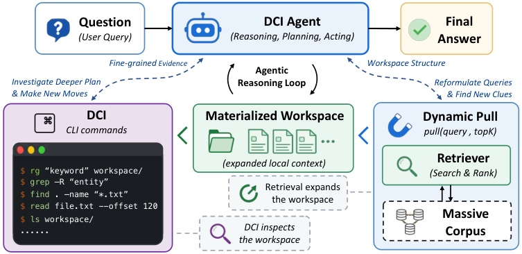
기존 RAG 시스템은 검색 결과를 순위대로 제시하기만 하므로 여러 문서 간 비교와 교차 검증이 어렵다는 문제가 있다. DR-DCI는 동적 작업공간 확장을 통해 이를 해결한다. 에이전트가 먼저 관련 문서만 작업공간으로 가져온 후 ripgrep, find 같은 로컬 탐색 도구로 증거를 직접 확인하고 검증하는 방식으로, 투자 리서치, 논문 검증, 팩트체크 등 다중 문서 근거 기반 시스템에 최적화되어 있다.
핵심 포인트: 핵심 기여: 검색과 직접 상호작용을 결합해 고 재현율 검색 이후 터미널 기반 세밀한 조사를 가능하게 하며, 대규모 코퍼스에서도 확장 가능한 에이전트 검색 프레임워크 제시.
GitHub
Qwen4-Max — 알리바바의 2.4조 파라미터 대규모 언어 모델 공개
알리바바가 11월 16일 Qwen4-Max를 정식 공개했다. 2.4조 파라미터 규모로 활성화 파라미터를 25% 감소시키고 3,280억 규모의 N-gram 임베딩을 추가해 효율성을 개선했다. 100만 토큰당 입력 1.5달러, 출력 4.5달러의 경쟁력 있는 가격으로 제공되며, 100만 토큰 컨텍스트와 비전 기능을 지원한다. API 형태로만 배포되며 QwenCloud, Qwen Studio, QwenWork 등 알리바바 생태계에서 즉시 활용 가능하다.
핵심 포인트: 핵심 성과: 직전 모델 대비 독립 평가에서 9점 향상하면서 과제당 비용을 3분에 1로 절감했으며, Claude Opus의 4분의 1 수준의 저가격 책정으로 시장 경쟁력을 확보했다.
기타 (Others)
RAG 인용의 함정: 1.2~15.7%는 실제 출처가 아닌 모델 기억
RAG 시스템이 출처를 인용하더라도 실제로 그 문서를 참고했다는 보장이 없다는 문제를 제기한 연구. 검색 문서의 사실을 의도적으로 변경한 뒤 재질의하여 모델이 인용된 출처가 아닌 내부 기억에서 답변하는 비율을 측정했다. 결과적으로 1.2%에서 15.7% 사이의 인용된 주장이 실제로는 모델의 매개변수 기억에서 나온 것으로 확인되었으며, 모델 크기가 클수록 이 비율이 증가하는 경향을 보였다.
핵심 포인트: 핵심 성과: 인용이 달린 주장의 1.2~15.7%가 실제로는 모델 기억에서 생성되며, 자연어 추론 기반 검증은 이를 탐지하지 못하고 있음. 문서 삽입/삭제 시 모델 출력 분포 변화를 측정하는 방법이 가장 효과적이나 여전히 실무 적용 수준에 미달.
논문 (Papers)
QDRAG — 질문 분해로 RAG 인용 정확도와 일반화 개선
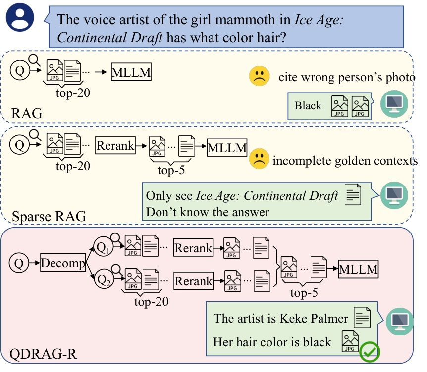
RAG 시스템이 검색 결과를 인용할 때 필요 이상으로 많이 인용하거나 숨은 대상을 놓치는 문제를 질문 분해 기법으로 해결한 논문. QDRAG는 입력 질문을 원자 단위의 하위 질문으로 분해해 암묵적 개체를 먼저 식별한 후, 리랭커로 방해 문맥을 필터링해 과잉 인용을 줄인다. 질문 분해 학습이 직접적인 인용 생성 학습보다 새로운 문제에 더 잘 일반화되며, 4개 멀티모달 질의응답 벤치마크에서 Gemini-Pro를 포함한 모든 비교 방식을 능가했다.
핵심 포인트: 핵심 성과: 질문 분해 기반 학습으로 새로운 문제에 대한 일반화 성능을 향상시켰으며, 4개 멀티모달 QA 벤치마크 모두에서 최고 성능 달성, Gemini-Pro보다 우수한 결과 기록.
논문 (Papers)
Apple SupportNet·KeyNet — RAG 벡터 검색을 8배 빠르게 하는 학습 기반 기법
RAG 시스템에서 대규모 문서 데이터베이스를 검색할 때 질의 분포를 고려하지 않는 기존 근사 검색 방식의 한계를 해결한 연구. Apple 연구진은 고정된 문서 데이터베이스에 맞춰 작은 신경망을 사전 학습하는 방식을 제안했다. SupportNet은 클러스터별 최상의 일치 점수를 예측해 질의를 더 적합한 클러스터로 라우팅하고, KeyNet은 질의 벡터를 최적 문서에 가까운 벡터로 변환해 기존 IVF 인덱스의 성능을 향상시킨다.
핵심 포인트: 핵심 성과: Natural Questions 실험에서 99% 재현율 달성 시간을 1.8ms에서 0.23ms로 최대 약 8배 단축, 살펴봐야 하는 문서 비율도 최대 약 11배 감소.
🔗 threads.com/@aaron_place_h/post/DfsB3I0kp…
기타 (Others)
Gemini 4 Hydrogen — 구글의 고속 경량 AI 모델 무료 공개
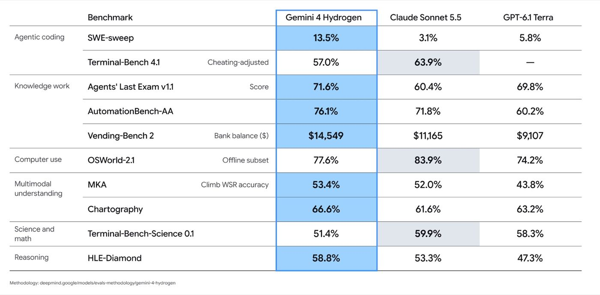
구글이 추론 깊이보다 빠른 실행 속도가 필요한 일상적 작업을 위해 설계한 Gemini 4 Hydrogen을 공개했다. 이전 Gemini 4 Argon, Carbon 모델은 유료 등급에만 제공되었으나, Hydrogen은 모든 사용자 계층에 무료로 제공되며 선행 모델인 3.8 Flash 대비 2.5배 빠른 처리 속도를 실현한다. 텍스트, 이미지, 음성, 영상을 입력받고 100만 토큰까지 처리 가능하며, 코드 작성과 검증 같은 반복적 작업에 최적화되어 있다.
핵심 포인트: 핵심 성과: Gemini 4 Hydrogen은 선행 모델 3.8 Flash 대비 2.5배 빠른 처리 속도를 달성했으며, 독립 평가 기관 Artificial Analysis의 벤치마크에서 기본 설정 51점, 심화 설정 54점을 기록하여 상위 모델 Argon을 초과했다.
🔗 blog.google/innovation-and-ai/models-and…
블로그 (Blog)
Re-Search: 스무고개로 밝힌 LLM의 연구 아이디어 생성 한계
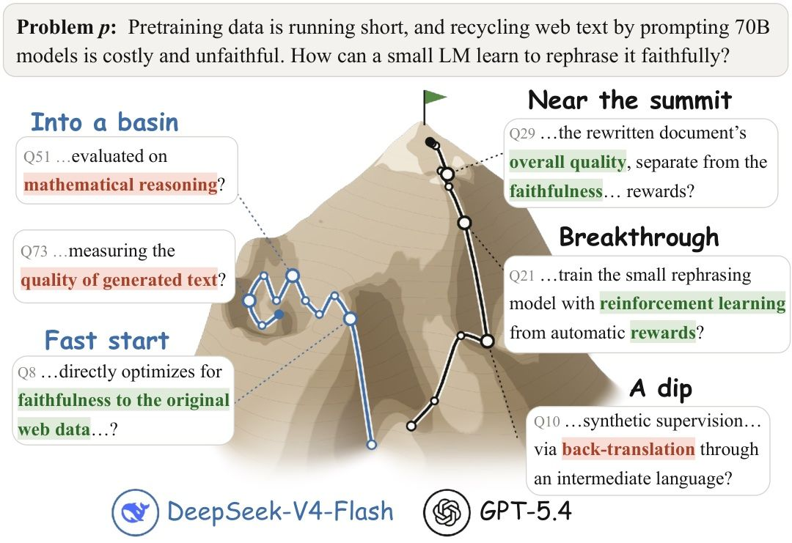
언어 모델은 우수한 연구 아이디어를 평가하는 능력은 있으나 독립적으로 생성하는 데 어려움을 겪는다. Re-Search는 스무고개 형식의 게임 프레임워크로 이 문제를 분석한다. ICML 2026 논문 200편의 연구 문제만 주어진 모델이 예/아니오 질문을 통해 논문의 핵심 아이디어를 재발견해야 한다. 최신 모델 6개 평가 결과 진전의 대부분이 초기 30개 질문 내에서 발생하고 이후 정체되는 패턴을 발견했으며, 병목이 판단이 아닌 생성 능력임을 확인했다.
핵심 포인트: 핵심 성과: 100개 질문 중 처음 30개 이내에서 대부분의 진전 발생, 이후 완전히 정체되는 현상 확인. 우수한 아이디어나 질문은 인식하나 독립적 생성 불가능으로 AI 연구 시스템에 외부 아이디어 공급 구조의 필요성 제시.
논문 (Papers)
OpticalRAG — 문서를 이미지로 압축해 16개 토큰으로 RAG 구현
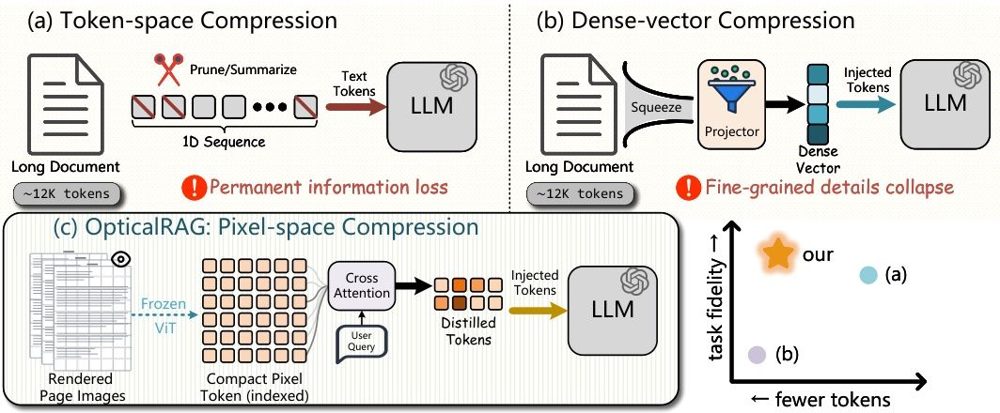
RAG 시스템에서 긴 문서를 텍스트로 압축하면 세부 정보가 되돌릴 수 없게 손실되는 문제가 있다. OpticalRAG는 문서를 페이지 이미지로 렌더링한 후 비전 인코더로 인코딩하여 약 100개의 시각 토큰으로 압축하고, 질문에 맞춰 최종 16개 토큰으로 재압축하여 언어 모델에 전달한다. 이를 통해 텍스트 기반 방식보다 정보 손실을 크게 줄이면서도 토큰 효율성을 극대화하며, 세 가지 벤치마크 모두에서 최고 성능을 달성했다.
핵심 포인트: 핵심 성과: 문서 한 페이지를 약 100개 시각 토큰에 손실 거의 없이 담고 질문별로 16개 토큰으로 압축하여 토큰 효율성을 극대화했으며, LongBench-v2, BAMBOO, LooGLE-v2 벤치마크에서 압축률 대비 최고 정확도 달성
논문 (Papers)
Apple KeyNet — RAG 검색 최대 8배 빠르게 하는 학습 기반 벡터 검색
RAG 시스템에서 질문과 문서 간의 벡터 특성 차이로 인한 검색 비효율을 해결하는 연구다. Apple 머신러닝 리서치는 고정된 문서 데이터베이스에 맞춰 소형 신경망을 미리 학습하는 SupportNet과 KeyNet을 제안한다. KeyNet은 질의 벡터를 최적 검색 대상에 가까운 벡터로 변환해 기존 IVF 인덱스의 탐색 범위를 줄인다. Natural Questions 데이터셋의 260만 문단에서 99% 재현율 달성 시간을 1.8ms에서 0.23ms로 단축했다.
핵심 포인트: 핵심 성과: 99% 재현율 달성 시간을 최대 약 8배 단축(1.8ms → 0.23ms)하고, 탐색해야 할 문서 비율을 최대 약 11배 감소. 고정된 문서 집합에 대해 일회성 학습으로 반복 검색 비용을 대폭 절감하는 실용적 접근법 제시.
🔗 machinelearning.apple.com/research/faster…
기타 (Others)
Gemini Decisions API — 객관식 판단 전용 모델로 빠른 의사결정
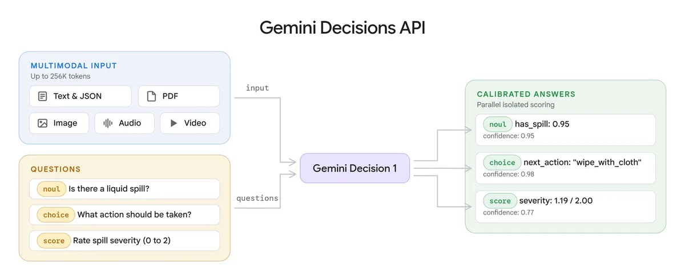
LLM이 텍스트를 토큰 단위로 생성하면서 발생하는 지연과 비용 문제를 해결하기 위해 구글이 새로운 Gemini Decision 1 모델과 Decisions API를 공개했다. 이 모델은 개발자가 정의한 선택지에 대해 한 번의 계산으로 확률을 반환하며, 텍스트 이미지 음성 영상 PDF를 처리하고 최대 1,000개 질문을 동시 처리한다. 고객 문의 분류, 규정 위반 판정, 도구 선택 등 소프트웨어 내 반복되는 판단 작업에 최적화되었다.
핵심 포인트: 핵심 성과: 입력 100만 토큰당 0.1달러로 ChatGPT 대비 저렴한 가격, 출력 토큰 비용 0원, 150-250ms 지연시간으로 기존 생성형 모델 대비 훨씬 빠른 응답 시간 제공.
🔗 blog.google/innovation-and-ai/technology…
블로그 (Blog)
Lightfoot — GraphRAG에서 모델 호출 없이 문서 삭제 가능
GraphRAG 시스템에서 문서 삭제 시 수천 번의 모델 호출이 필요한 문제를 해결하는 논문. Lightfoot는 모든 개체와 관계를 문단 추출 결과로부터 결정적으로 생성하고 청크 단위 출처를 기록하여, 문서 삭제를 데이터베이스 작업으로 변환한다. 11,402개 문단 중 10% 삭제 후 새로 생성한 그래프와 정확히 일치하며, 기존 LightRAG에서 필요한 2,187회 모델 호출과 3.7시간을 완전히 제거한다.
핵심 포인트: 핵심 성과: 문서 삭제가 모델 호출 없는 순수 데이터베이스 작업으로 변환되어 개인정보 삭제 요청 및 규제 준수 비용 제거, 대규모 코퍼스에서 삭제 후 그래프가 처음부터 재구성한 결과와 100% 일치함을 검증.
논문 (Papers)
DEVTOOLS & OPEN SOURCE
Claude-BugHunter — HackerOne 패턴 기반 자동 보안 취약점 스캔 도구
개발자가 배포 전 코드의 보안 취약점을 자동으로 점검하기 어려운 문제를 해결하는 오픈소스 도구. HackerOne에 공개된 681건의 실제 취약점 리포트를 83개 보안 스킬로 압축하여 XSS, SSRF, OAuth, 결제 우회 등 주요 공격 패턴을 사전에 탐지한다. Claude Code, Codex, OpenCode 등 5개 AI 에이전트와 호환되며, 단순 정규식 매칭이 아닌 실제 공격 재현 패턴과 증거 검증 단계를 거쳐 오탐을 최소화한다.
핵심 포인트: 핵심 성과: GitHub 트렌딩 +1,057스타로 7.4k 스타 달성, HackerOne 681건 패턴을 24개 취약점 클래스로 분류하고 83개 스킬 및 15개 슬래시 명령으로 구현했으며, Burp MCP 통합과 DVWA, OWASP Juice Shop 등 공개 플랫폼에서 검증됨.
🔗 github.com/elementalsouls/Claude-BugHunter
GitHub
Univer Office SDK — 제품 내 오피스 임베드형 편집기
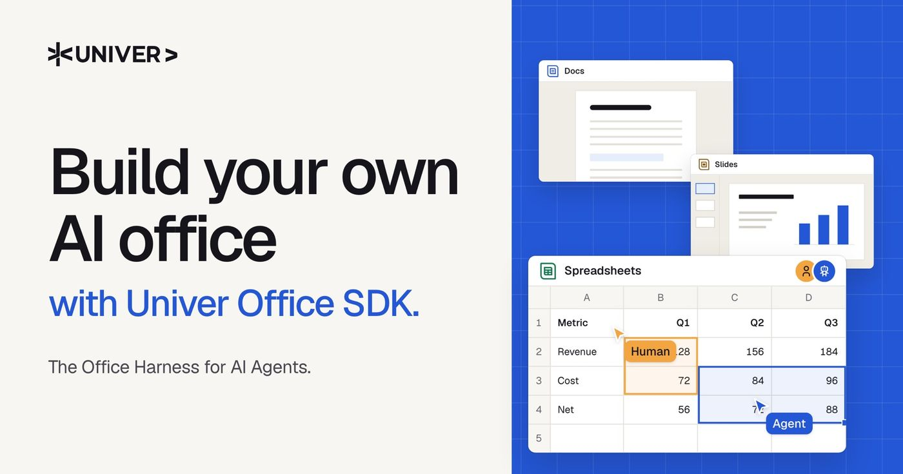
AI 에이전트 제품에 문서 편집 기능을 통합할 때 처음부터 개발하기보다는 기존 솔루션을 활용하는 방식이 효율적이라는 시대적 변화를 반영한다. Univer는 오픈소스 스프레드시트 및 문서 편집기를 SDK 형태로 제공하여 서비스 내에 엑셀, 워드, 파워포인트 기능을 통째로 임베드할 수 있게 한다. 수식 계산, 실시간 협업, 파일 입출력 등 완전한 오피스 기능을 갖추었으며, AI 에이전트가 문서 내용을 직접 편집하고 검토할 수 있는 API를 제공한다.
핵심 포인트: 핵심 성과: GitHub 스타 2.4만 돌파한 Apache 2.0 라이선스 오픈소스로, 셀 서식·병합·필터·정렬·조건부 서식 등 스프레드시트 기능과 함께 Node.js 자동 처리 및 Facade API를 통한 에이전트 연동을 지원한다.
GitHub
UI SDK: AI가 생성하는 UI를 위한 재사용 가능한 동작 라이브러리
AI 에이전트가 UI를 직접 생성하고 사용하는 시대에서 기존 개발 방식의 문제를 해결하기 위해 Vercel과 shadcn이 UI SDK를 공개했다. 버튼 클릭, 키보드 조작, 포커스 관리, 팝업, 드래그 드롭 등의 UI 동작을 독립적으로 분리하여 재사용 가능하게 제공함으로써, AI가 예약 화면이나 선택 메뉴 같은 UI를 처음부터 구현할 필요 없이 조합하여 구성할 수 있도록 한다. React, Vue, Svelte, Solid, Web Components 등 개발 환경에 관계없이 활용 가능하다.
핵심 포인트: 핵심 기여: UI SDK 코어에서 키보드 네비게이션, 포커스, 선택, 팝업, 드래그 드롭 및 ARIA 표준을 포함한 재사용 가능한 동작 라이브러리를 제공하며, 5개 주요 프레임워크에 대한 어댑터를 지원하여 프레임워크 독립적인 UI 생성을 가능하게 한다.
GitHub
Answer me with HTML — AI 에이전트 질문을 웹페이지로 답변
AI 에이전트에 복잡한 질문을 하면 터미널에 긴 텍스트가 출력되는 문제를 해결하는 오픈소스 스킬. 에이전트가 마크다운 초안을 작성하면 번들된 CLI 도구가 50ms 내에 다이어그램과 표가 포함된 HTML 페이지로 변환하여, 직접 HTML을 작성할 때보다 토큰 사용량을 1/8 수준으로 감소시킨다. TCP 핸드셰이크, 레포 구조 설명 등 복잡한 기술 개념 설명에 적합하며, 오프라인에서도 열 수 있는 독립형 파일로 생성된다.
핵심 포인트: 핵심 성과: HTML 직접 작성 대비 토큰 사용량 1/8 감소, 50ms 변환 속도, 다이어그램과 표 자동 생성 지원, Node.js 20 이상에서 한 줄 설치 가능(npx skills add QingYunA/answer-me-with-html), MIT 라이선스.
🔗 github.com/QingYunA/answer-me-with-html
GitHub
OpenAI Codex Security — AI로 자동 취약점 탐지·수정하는 CLI 도구
개발팀이 보안 검사를 수동으로 진행하는 과정의 번거로움과 일관성 부족을 해결하기 위해 OpenAI가 Codex Security를 공개했다. CLI와 TypeScript SDK로 코드 저장소의 보안 취약점을 자동으로 스캔하고, AI 기반 검증과 패치 생성까지 수행하며, Linear, Jira, GitHub으로 추적하거나 SARIF, JSON, CSV 형식으로 내보낼 수 있다. GitHub Actions와 Docker Compose를 통해 CI 환경에 통합하면 자동화된 대량 스캔도 가능하다.
핵심 포인트: 핵심 성과: 표준 스캔과 심층 스캔 두 가지 모드로 중복 제거된 취약점을 찾으며, 저장소 전체·선택 경로·Git 변경사항을 선택적으로 스캔할 수 있고, OpenAI·Amazon Bedrock·OpenRouter·Fireworks AI 등 여러 LLM 제공업체를 지원한다.
기타 (Others)
Heptabase Explainer Studio — PDF를 3Blue1Brown 스타일 설명 영상으로 자동 생성
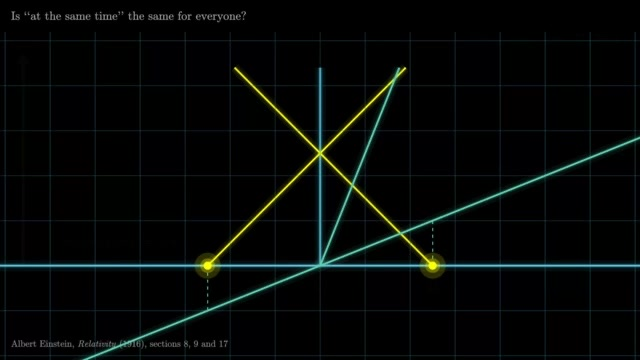
대학원생들이 논문과 교과서를 학습할 때 복잡한 개념을 이해하기 어려운 문제가 있다. Heptabase 공동 창업자가 Claude Opus 5.5를 기반으로 개발한 플러그인은 PDF 자료를 입력받아 자동으로 5가지 교수법 중 최적의 방식을 선택해 ManimGL 엔진으로 렌더링된 설명 영상 시리즈를 생성한다. 오픈소스이며 무료로 제공되고 Heptabase 가입 없이 사용 가능하며, 작성자는 이를 통해 거의 100개의 설명 영상을 제작했다.
핵심 포인트: 핵심 성과: 5가지 프리젠터(개념 그림화, 시뮬레이션, 미니 버전, 사례 비교, 역사 전개)로 각 에피소드마다 최적의 설명 방식 자동 선택, 한 편당 10~20분 분량의 완성된 애니메이션 영상 생성. 오픈소스(Apache-2.0) 공개로 거의 100개의 교과서·논문 설명 영상 제작 검증 완료.
🔗 github.com/heptameta/heptabase-explainer…
기타 (Others)
AWS Emulator — AI 에이전트가 작성한 200개 AWS 서비스 로컬 에뮬레이터
AI 코딩 에이전트의 빠른 개발 속도에 비해 클라우드 테스트는 느리고 비용이 높다는 문제를 해결하기 위해 AWS가 AWS Emulator를 출시했다. 개발자의 로컬 머신에서 200개 이상의 AWS 서비스를 시뮬레이션하며, 네트워크 연결 없이 실제 클라우드 비용을 들이지 않고 코드를 테스트할 수 있다. 특이한 점은 모든 코드가 AI 에이전트에 의해 작성되었으며 엔지니어는 한 줄도 작성하거나 검토하지 않았다는 것이다.
핵심 포인트: 핵심 성과: 400개 이상의 API 모델로 200개 이상의 AWS 서비스를 에뮬레이션하며, 수백 개의 AI 에이전트가 하루 수천 건의 유지보수 작업을 자동 처리. 주말 실험으로 시작해 15분 만에 Amazon SQS 첫 버전 완성.
🔗 geekwire.com/2026/aws-gives-developers-a…
기타 (Others)
Xcode 플러그인 — Apple, Claude Code와 공식 연동 시작
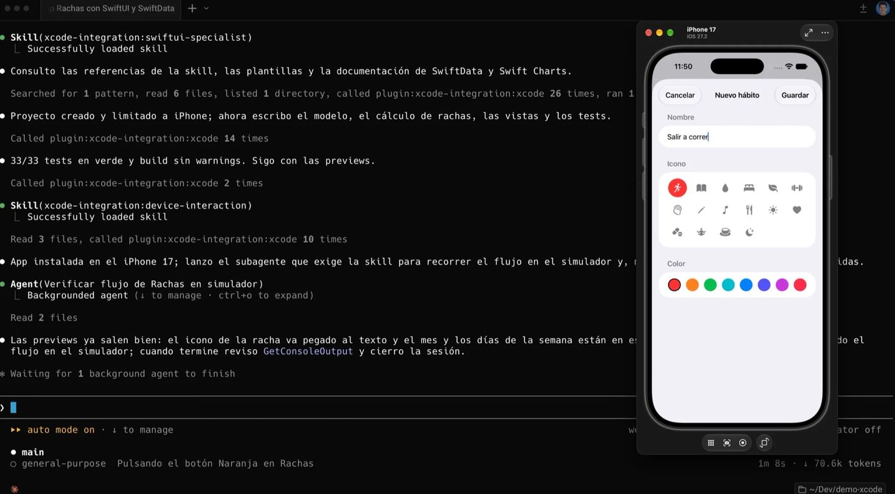
Apple이 Claude Code에서 Xcode 기능을 직접 제어할 수 있는 공식 플러그인을 마켓플레이스에 등록했다. 기존 Xcode 내장 연동과 달리 Claude Code에서 로컬 Xcode 기능을 연결하는 방식으로, 앱 빌드·실행·테스트, SwiftUI 화면 미리보기, 시뮬레이터 및 기기 작업을 지원한다. 빌드 로그 검색과 Apple 공식 문서 연동으로 AI 코드 생성과 실행 검증 사이클을 완성하는 개발 워크플로우를 구현한다.
핵심 포인트: 핵심 성과: Apple Inc. 공식 작성자로 등록된 Xcode 플러그인으로 /plugin install xcode@claude-plugins-official 명령어로 설치 가능하며, Claude Code에서 빌드·테스트·미리보기·문서 검색까지 일관된 개발 환경 제공.
🔗 x.com/midudev/status/2119808657206411649
기타 (Others)
CreaBIM 1.1 — 건축가를 위한 오픈소스 BIM 설계 도구
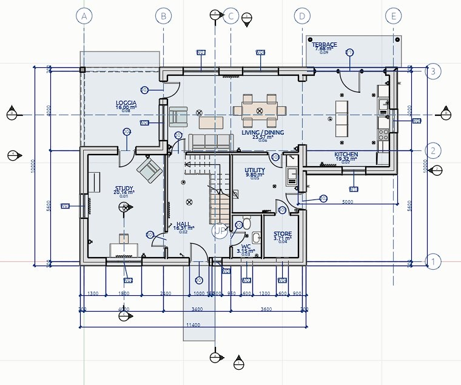
건축 설계 과정에서 3D 모델, 평면도, 단면도, 시트, 스케줄을 하나의 모델에서 일괄 관리하기 어려운 문제를 해결하는 무료 오픈소스 BIM 소프트웨어. Blender와 유사한 인터페이스로 설계 중심의 워크플로우를 제공하며, 곡선 벽, 수정자, 커스텀 타이틀 블록 등 새로운 기능이 추가되었다. 계정 없이 오프라인으로 완전하게 작동하며 IFC 형식을 지원한다.
핵심 포인트: 핵심 성과: 단일 모델에서 모든 도면이 자동 생성되며, 박스/원/올가미 선택, Blender 스타일 편집 모드, 곡선 벽 지원으로 건축 설계 효율성 극대화. Windows, macOS, Linux를 지원하는 완전 오픈소스이며 라이선스 비용 없이 오프라인 사용 가능.
🔗 chopinregis.github.io/CreaBIM/
기타 (Others)
ENGINEERING
Laya: AWS SageMaker에서 Decision Model 학습 및 배포
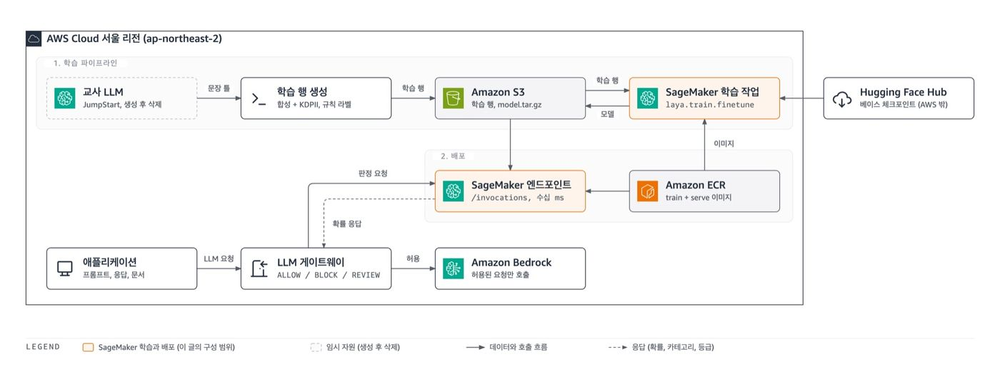
LLM이 생성 작업에 최적화된 반면, 판단 결과를 확률로 반환하는 Decision Model이 분류 작업의 효율적 대안으로 등장했다. 오픈소스 Decision Model인 Laya를 Amazon SageMaker에서 추가 학습하고 실시간 엔드포인트로 배포하는 전체 구성 가이드를 제시하며, 개인정보 판단 과제에서 Jev 및 대규모 LLM과 유사한 정확도를 달성하면서도 최소 GPU 인스턴스에서 수십 ms 수준의 초저지연 처리를 구현했다.
핵심 포인트: 핵심 성과: 추가 학습한 Laya 모델이 ml.g4dn.xlarge(T4 1장) 인스턴스에서 단일 판정을 수십 ms에 처리하면서 Jev 및 수백 배 큰 LLM 수준의 정확도 달성.
🔗 aws.amazon.com/ko/blogs/tech/aws-laya/
기타 (Others)
Apache HTTP/2 — modhttp2 원격 코드 실행 취약점 긴급 패치
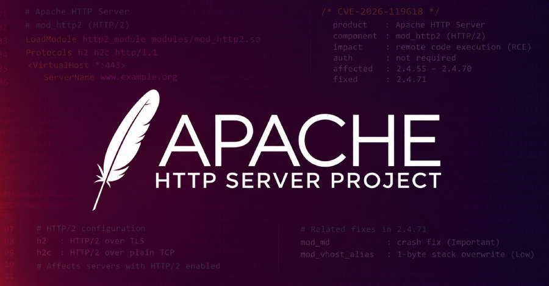
Apache HTTP Server의 HTTP/2 모듈인 modhttp2에서 발견된 중대 취약점은 인증 없이 원격 공격자가 서버에서 임의 코드를 실행할 수 있게 한다. CVE-2026-119618으로 추적되며 2.4.55~2.4.70 버전에 영향을 미치고, 2.4.71에서 수정되었다. HTTP/2가 활성화된 서버만 영향을 받으며, CVSS 점수 9.8로 평가된 이 취약점은 공개 PoC가 존재하고 기본 설정에서 신뢰할 수 있는 익스플로잇이 입증되었다.
핵심 포인트: 핵심 위협: CVSS 9.8 심각도의 인증 불필요 원격 코드 실행 취약점으로 기본 설정 상태의 modhttp2 활성화 서버에서 완전한 제어 탈취 가능
🔗 thehackernews.com/2026/11/critical-apache…
기타 (Others)
AIDC-AI.IO — 데이터센터 자동 설계 엔진의 배치·구조·라우팅 시각화
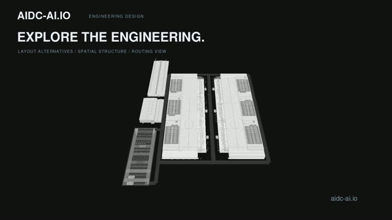
데이터센터 설계 시 배치 대안, 내부 구조, 랙 및 라우팅을 수동으로 검토하는 데 시간이 많이 소요되는 문제를 AIDC-AI.IO의 자동화 알고리즘으로 해결한다. BIM과 장비 모델을 통해 전력, 냉각, 네트워크, PUE/WUE 등을 하나의 EngineSession에서 연결하고, 150MW 규모는 48분, 300MW 규모는 610분 내에 3D 물리 인스턴스, BOM, 비용 검증을 포함한 완전한 설계안을 자동 생성한다.
핵심 포인트: 핵심 기여: OPR, BOD, rackPlan, 전력, 냉각, 네트워크, BOM, 3D 및 planning 데이터가 동일 revision으로 동기화되며, pandapower, Modelica/FMU, OpenFOAM 등 엔지니어링 시뮬레이션 결과가 입력 digest와 일치할 때만 설계안을 승인하는 고신뢰 검증 체계를 구현했다.
기타 (Others)
Strands Decider — 아마존이 LLM을 결정 모델로 바꿔 AI 비용 98% 절감
아마존은 사내 티켓 분류 작업에 사용하던 고가의 Claude Sonnet 4.6을 경량 결정 모델인 Strands Decider로 교체했다. 단순 분류 작업에 생성형 LLM이 불필요했기 때문이다. 교체 결과 100만 건당 비용이 22,200달러에서 500달러로 내려갔으며, 분류 정확도는 동등하고 처리 시간은 78% 단축됐다. 일의 본질에 맞는 AI 모델 선택으로 연간 수백만 달러의 토큰 비용 절감을 달성했다.
핵심 포인트: 핵심 성과: 사내 티켓 분류 비용 98% 절감(100만 건당 22,200달러 → 500달러), 분류 정확도 유지, 처리 시간 78% 단축(4.2초 → 0.9초). 선택지 중 하나만 출력하는 결정 모델로 토큰 사용량 70% 감소, 출력 토큰 170개에서 1개로 축소.
🔗 strandsagents.com/blog/amazon-saves-milli…
기타 (Others)
PRODUCT & INDUSTRY
Gemini 4 Hydrogen — Google 검색에 전 세계 확대 배포
Google 검색이 복잡한 쿼리 이해와 시각적 응답 제공에서 제한이 있었던 문제를 해결하기 위해 Gemini 4 Hydrogen을 전 세계에 배포했다. 이 모델은 다중 부분 질문, 오타 처리, 고도로 구체적인 요청을 처리하는 더 나은 의도 이해 능력을 제공하며, 고급 추론을 통해 더 광범위한 관련 링크를 연결하고, 이미지, 표, 맞춤형 도구를 포함한 적응형 시각적 응답을 생성한다.
핵심 포인트: 핵심 성과: Gemini 4 Hydrogen은 Google 검색의 가장 큰 모델 업그레이드로, 쿼리 팬아웃 기법으로 이전보다 더 광범위한 도움이 되는 링크를 연결하고, 지원되는 모든 AI 모드 언어에서 더 정교한 언어 이해 능력을 제공한다.
🔗 blog.google/products-and-platforms/produc…
블로그 (Blog)
Claude Meetings — 화상회의 중 AI가 실시간으로 문서와 산출물 생성
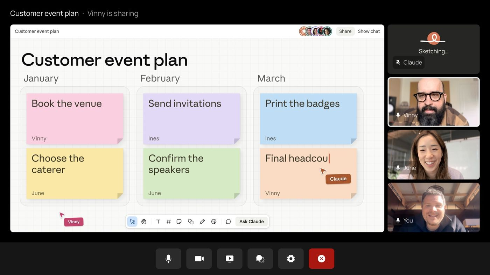
팀 회의 중 실시간 협업 문제를 해결하기 위해 Anthropic이 Claude Meetings을 출시했다. Claude가 화상회의의 가시적 참여자로 참석하여 음성 또는 채팅을 통한 질문에 답변하고, 회의 진행 중 문서, 화이트보드, 기타 산출물을 팀과 함께 작성한다. 회의 후 Claude가 작성한 노트, 액션 아이템, 회의 녹취록과 생성된 모든 산출물이 Claude의 회의 페이지에 저장되어 별도 기록 작업을 제거한다.
핵심 포인트: 핵심 성과: Claude가 회의 참여자로서 실시간 협업 문서 작성, 노트 자동 생성, 액션 아이템 추출을 수행하며 Team 및 Enterprise 플랜에서 베타 출시되었고 Google Meet부터 지원하며 추가 플랫폼 확대 예정
🔗 claude.com/resources/articles/claude-meet…
기타 (Others)
Solibri — BIM 모델 검증으로 설계부터 준공까지 신뢰할 수 있는 데이터 확보
디지털 건설 프로젝트에서 부실공사와 충돌 설계로 인한 재작업이 발생하는 문제를 해결하기 위해 Solibri는 BIM 모델 검증을 워크플로우에 내장한다. 구조화된 모델 데이터 검증을 통해 팀의 협업을 강화하고 설계 단계부터 준공까지 신뢰할 수 있는 모델 데이터를 유지함으로써 재작업을 줄이고 자신감 있는 프로젝트 완수를 지원한다.
핵심 포인트: 핵심 성과: 구조화된 BIM 검증으로 설계 단계부터 준공까지 모델 충돌 조기 발견 및 재작업 예방, 팀 간 신뢰성 높은 협업 환경 구축.
기타 (Others)
Solvaix: AI 에이전트 6개가 협력해 아파트 설비 설계 자동화 및 충돌 해결
건축 설비 설계 과정에서 여러 시스템 간 충돌과 성능 최적화 문제가 발생하는 것을 해결하기 위해 Solvaix는 AI 에이전트 기반 협력 시스템을 개발했다. 약 145제곱미터 아파트의 급수, 배수, 환기, 전기, 소방 설계를 5개의 전문 에이전트가 분담하고, 4,871가지 설계안을 검토한 후 발견된 11건의 설비 충돌을 6번째 조정 에이전트가 모두 해결했다. 온수 공급 대기 시간을 139초에서 5.6초로 단축하고 64개 코드 검사를 모두 통과시켰다.
핵심 포인트: 핵심 성과: 다중 AI 에이전트 협력으로 11건의 설비 충돌 100% 해결, 온수 대기 시간 96% 단축(139초→5.6초), 4,871가지 설계안 자동 검토 및 성능 최적화 달성
🔗 threads.com/@choi.openai/post/DfmN6rfD2k5…
기타 (Others)